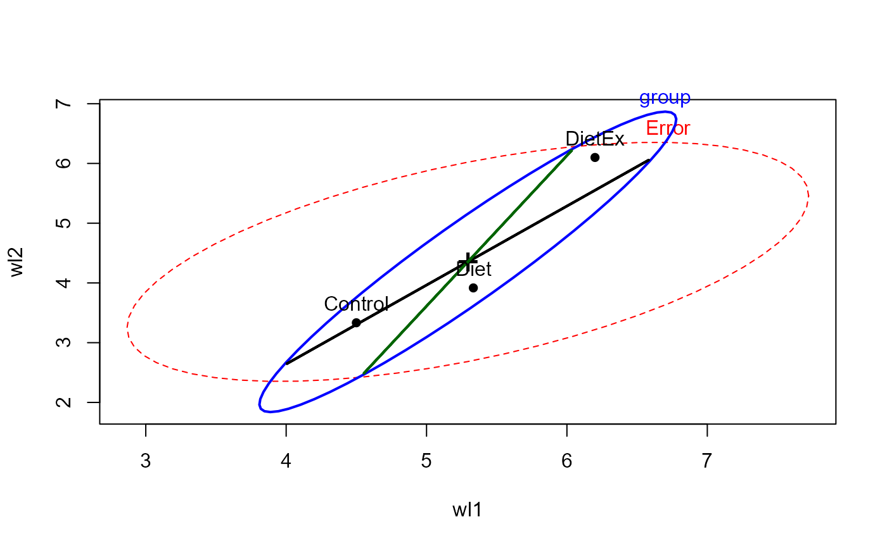
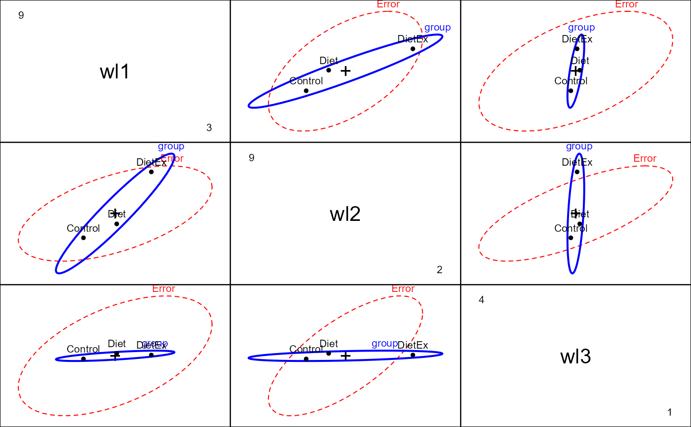
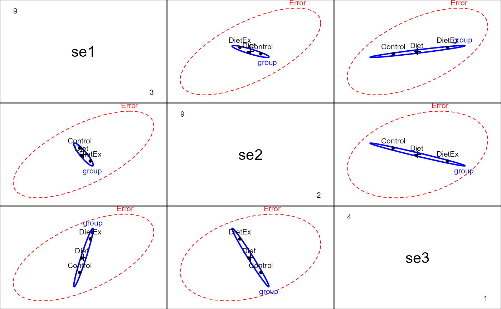
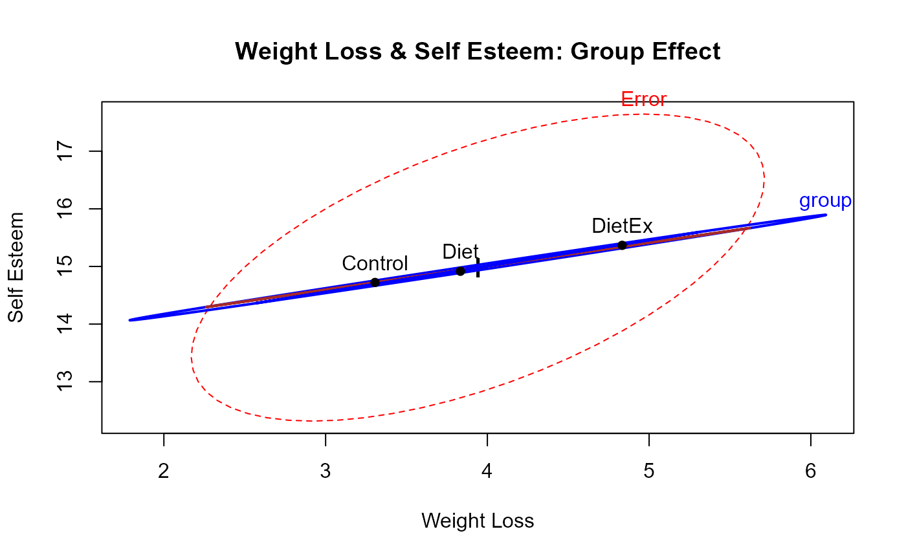
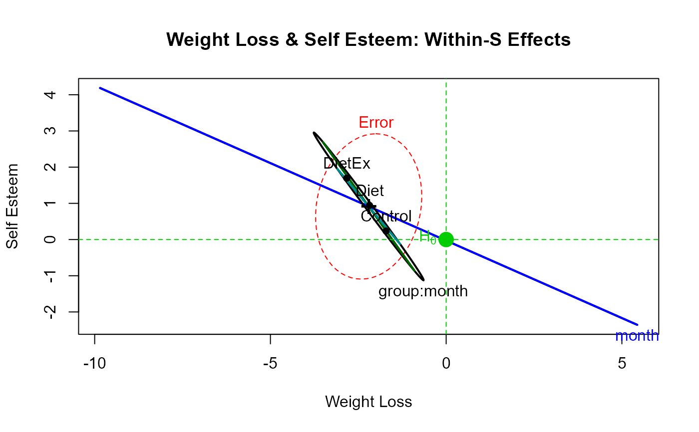

Contrived data on weight loss and self esteem over three months, for three groups of individuals: Control, Diet and Diet + Exercise. The data constitute a double-multivariate design.
Format
A data frame with 34 observations on the following 7 variables.
groupa factor with levels
ControlDietDietEx.wl1Weight loss at 1 month
wl2Weight loss at 2 months
wl3Weight loss at 3 months
se1Self esteem at 1 month
se2Self esteem at 2 months
se3Self esteem at 3 months
Source
Originally taken from http://www.csun.edu/~ata20315/psy524/main.htm, but modified slightly
Details
Helmert contrasts are assigned to group, comparing Control vs.
(Diet DietEx) and Diet vs. DietEx.
References
Friendly, Michael (2010). HE Plots for Repeated Measures Designs. Journal of Statistical Software, 37(4), 1-40. doi: 10.18637/jss.v037.i04 .
Examples
data(WeightLoss)
str(WeightLoss)
#> 'data.frame': 34 obs. of 7 variables:
#> $ group: Factor w/ 3 levels "Control","Diet",..: 1 1 1 1 1 1 1 1 1 1 ...
#> ..- attr(*, "contrasts")= num [1:3, 1:2] -2 1 1 0 -1 1
#> .. ..- attr(*, "dimnames")=List of 2
#> .. .. ..$ : chr [1:3] "Control" "Diet" "DietEx"
#> .. .. ..$ : NULL
#> $ wl1 : int 4 4 4 3 5 6 6 5 5 3 ...
#> $ wl2 : int 3 4 3 2 3 5 5 4 4 3 ...
#> $ wl3 : int 3 3 1 1 2 4 4 1 1 2 ...
#> $ se1 : int 14 13 17 11 16 17 17 13 14 14 ...
#> $ se2 : int 13 14 12 11 15 18 16 15 14 15 ...
#> $ se3 : int 15 17 16 12 14 18 19 15 15 13 ...
table(WeightLoss$group)
#>
#> Control Diet DietEx
#> 12 12 10
contrasts(WeightLoss$group) <- matrix(c(-2,1,1, 0, -1, 1),ncol=2)
(wl.mod<-lm(cbind(wl1,wl2,wl3,se1,se2,se3)~group, data=WeightLoss))
#>
#> Call:
#> lm(formula = cbind(wl1, wl2, wl3, se1, se2, se3) ~ group, data = WeightLoss)
#>
#> Coefficients:
#> wl1 wl2 wl3 se1 se2 se3
#> (Intercept) 5.34444 4.45000 2.17778 14.92778 13.79444 16.28333
#> group1 0.42222 0.55833 0.04722 0.08889 -0.26944 0.60000
#> group2 0.43333 1.09167 -0.02500 0.18333 -0.22500 0.71667
#>
heplot(wl.mod, hypotheses=c("group1", "group2"))

pairs(wl.mod, variables=1:3)

pairs(wl.mod, variables=4:6)

# within-S variables
within <- data.frame(measure=rep(c("Weight loss", "Self esteem"),each=3), month=rep(ordered(1:3),2))
# doubly-multivariate analysis: requires car 2.0+
if (FALSE) {
imatrix <- matrix(c(
1,0,-1, 1, 0, 0,
1,0, 0,-2, 0, 0,
1,0, 1, 1, 0, 0,
0,1, 0, 0,-1, 1,
0,1, 0, 0, 0,-2,
0,1, 0, 0, 1, 1), 6, 6, byrow=TRUE)
# NB: for heplots the columns of imatrix should have names
colnames(imatrix) <- c("WL", "SE", "WL.L", "WL.Q", "SE.L", "SE.Q")
rownames(imatrix) <- colnames(WeightLoss)[-1]
(imatrix <- list(measure=imatrix[,1:2], month=imatrix[,3:6]))
contrasts(WeightLoss$group) <- matrix(c(-2,1,1,
0,-1,1), ncol=2)
(wl.mod<-lm(cbind(wl1, wl2, wl3, se1, se2, se3)~group, data=WeightLoss))
(wl.aov <- car::Anova(wl.mod, imatrix=imatrix, test="Roy"))
heplot(wl.mod, imatrix=imatrix, iterm="group:measure")
}
# do the correct analysis 'manually'
unit <- function(n, prefix="") {
J <-matrix(rep(1, n), ncol=1)
rownames(J) <- paste(prefix, 1:n, sep="")
J
}
measure <- kronecker(diag(2), unit(3, 'M')/3, make.dimnames=TRUE)
colnames(measure)<- c('WL', 'SE')
between <- as.matrix(WeightLoss[,-1]) %*% measure
between.mod <- lm(between ~ group, data=WeightLoss)
car::Anova(between.mod)
#>
#> Type II MANOVA Tests: Pillai test statistic
#> Df test stat approx F num Df den Df Pr(>F)
#> group 2 0.26266 2.3434 4 62 0.06451 .
#> ---
#> Signif. codes: 0 '***' 0.001 '**' 0.01 '*' 0.05 '.' 0.1 ' ' 1
heplot(between.mod, hypotheses=c("group1", "group2"),
xlab="Weight Loss", ylab="Self Esteem",
col=c("red", "blue", "brown"),
main="Weight Loss & Self Esteem: Group Effect")

month <- kronecker(diag(2), poly(1:3), make.dimnames=TRUE)
colnames(month)<- c('WL', 'SE')
trends <- as.matrix(WeightLoss[,-1]) %*% month
within.mod <- lm(trends ~ group, data=WeightLoss)
car::Anova(within.mod)
#>
#> Type II MANOVA Tests: Pillai test statistic
#> Df test stat approx F num Df den Df Pr(>F)
#> group 2 0.34305 3.2091 4 62 0.0185 *
#> ---
#> Signif. codes: 0 '***' 0.001 '**' 0.01 '*' 0.05 '.' 0.1 ' ' 1
heplot(within.mod)
heplot(within.mod, hypotheses=c("group1", "group2"),
xlab="Weight Loss", ylab="Self Esteem",
type="III", remove.intercept=FALSE,
term.labels=c("month", "group:month"),
main="Weight Loss & Self Esteem: Within-S Effects")
mark.H0()
